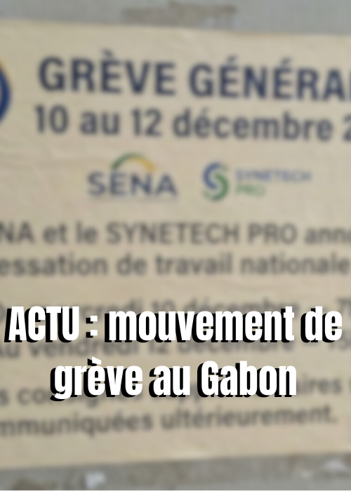
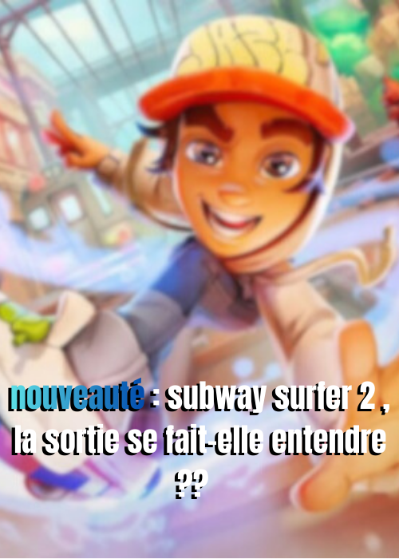

différente fonction de l’écriture
comprendre les visions poser
oser apprendre et innover
la lecture prend une toute nouvelle tournure
tutoriel
conseil
Actualités
expérience personnel
A LA UNE DU JOUR

Le mouvement de grève des enseignants a débuté le 5 janvier 2026, date correspondant à la reprise officielle du deuxième trimestre scolaire. Cette mobilisation a entraîné une forte perturbation du système éducatif public sur l’ensemble du territoire national, notamment à Libreville, Port-Gentil, Lambaréné, Mouila et Minvoul....Lire la suite
BD BOOM était à l’origine une association gabonaise dédiée à la bande dessinée. Elle est née à la suite d’un concours-atelier organisé en 1996 par le Centre culturel français Saint-Exupéry de Libreville. L’objectif principal de cette initiative était clair : rassembler de jeunes dessinateurs gabonais et les former aux bases de la bande dessinée....Lire la suite

Tout le monde connaît Subway Surfers, le célèbre jeu mobile qui consiste à courir sur des rails en évitant des trains et des obstacles, dans le but d’obtenir le meilleur score possible. Son principe repose sur un gameplay simple et efficace : slalom, sauts, glissades, bonus et hoverboards. Cette simplicité a largement contribué à son succès....Lire la suite